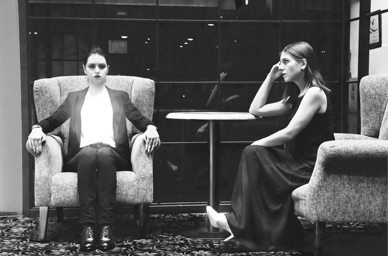
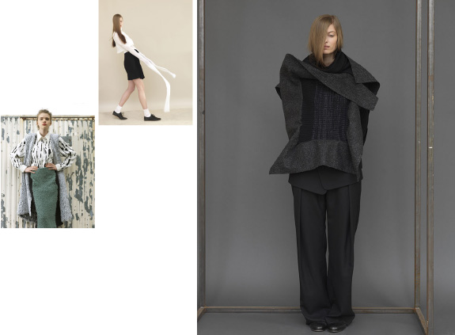
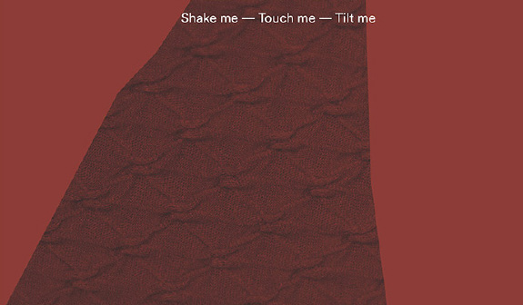
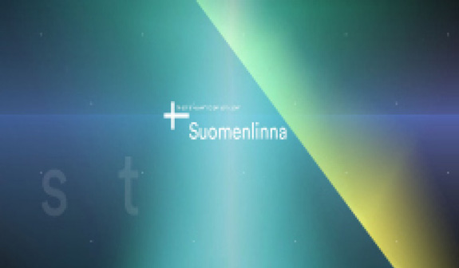
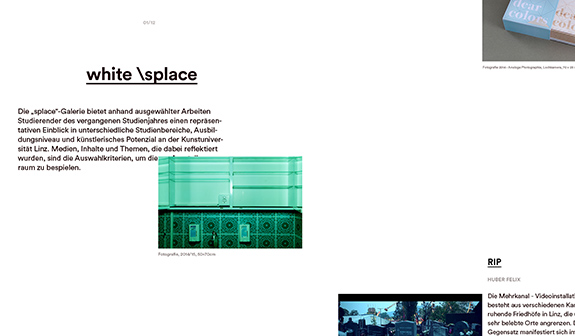

Centerfold-Video
Brainbows Karin Fisslthaler
Renommierte Alumni der Kunstuniversität Linz produzieren eigens für splace das Kunstwerk zum An-die-Wand-Hängen: diesmal von Karin Fisslthaler
> Artikel lesen

Logbuch Karin Bruns & Gerhard Umhaller
Serien in Schwarz: mediale
Erkundungen der Nacht
Eine Reisedokumentation aus dem winterlichen Helsinki und Tallinn
Lost in Hotel Heike Schnotale, Daniela Poschauko, Julia Romana Potocnik, Fotoserie 2015, Foto: Heike Schnotale, Daniela Poschauko, Julia Romana Potocnik
> Artikel lesen

Ute Ploier im Interview mit Sabine Kienzer
Mode ist eine glaubwürdig erzählte Geschichte
Über das Verschieben von Sehgewohnheiten und die Befreiung von Rollenbildern
> Artikel lesen
Daily Way Home Katharina Diezl, Foto: Elfie Semotan
das ende der welt, Marie Stoiser, 2014, Foto: Elfie Semotan
bark, Miriam Kohlhofer, 2013 – 2014, Foto: Elfie Semotan

Mode ist eine glaubwürdig erzählte Geschichte Theres Duschlbauer, Seth Rickard

Serien in Schwarz Barbara Perndl, Matthias Steinbauer

Die white \splace Gallerie mit ausgewählten Arbeiten von studierenden KünstlerInnen.
Team Ausgabe 02 – Colour:
Sabine Kienzer (Redaktionsleitung), Tina Frank, Marianne Pührerfellner, Matthias Steinbauer, Ismail Khalil, Lukas Leitner, Stefan Ehrenmüller, Elisabeth Egger-Mann, Katharina Mayrhofer, Nataša Sienčnik, Victoria Tanczos
Redaktion: Martina Aichhorn, Übersetzung: Jonathan Quinn, Nataša Sienčnik, David Westacott
AutorInnen
Sabine Kienzer, Karin Bruns, Gerhard Umhaller, Martin Reinhart, Helmut Lethen, Monika Wagner, the next ENTERprise - architects, Tina Frank, Ton Matton, Karin Harrasser, Gudrun Rath, Hubert Lobnig, Thomas Raab
Produzenten – Quervarianten:
Mode ist eine glaubwürdig erzählte Geschichte Theres Duschlbauer, Seth Rickard
Serien in Schwarz Barbara Perndl, Matthias Steinbauer
Schwere Geburt Martin Ruprecht, Marjan Moradhasel, Michael Schinninger
Steinzeit der Evidenz Hannes Rettenbacher, Matthias Steinbauer
Kunstgeschichte in Schwarzweiß Iryna Lubiana, Matthias Steinbauer
Warum ArchitektInnen Schwarz tragen und in Grau und Weiß bauen Zheng Xian, Michael Weingartner
Brainbows Karin Fisslthaler, Matthias Steinbauer
Alles ist möglich Tina Frank, Matthias Steinbauer
Zweifel Marianne Pührerfellner, Sabine Pils, Matthias Steinbauer
Zombies RIP, Felix Huber, Video 2:30
Wer fürchtet sich vor Rot und Blau Dominika Michalkova, Dominik Prilmüller
Meditation zum Baker-Miller-Pink Wolfgang Hauer, Shahir Salama, Mostafa Aly"